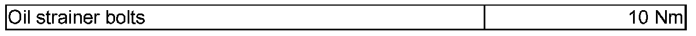

LEMON Manuals
: Even more car manuals for everyone: 1960-2025
Home
>>
Volkswagen
>>
2004
>>
Touareg (7LA) V6-3.2L (BAA)
>>
Repair and Diagnosis
>>
Specifications
>>
Mechanical Specifications
>>
Automatic Transmission/Transaxle
>>
Fluid Filter - A/T
Fluid Filter - A/T
Torque specifications, 09D, 6 Speed A/T
